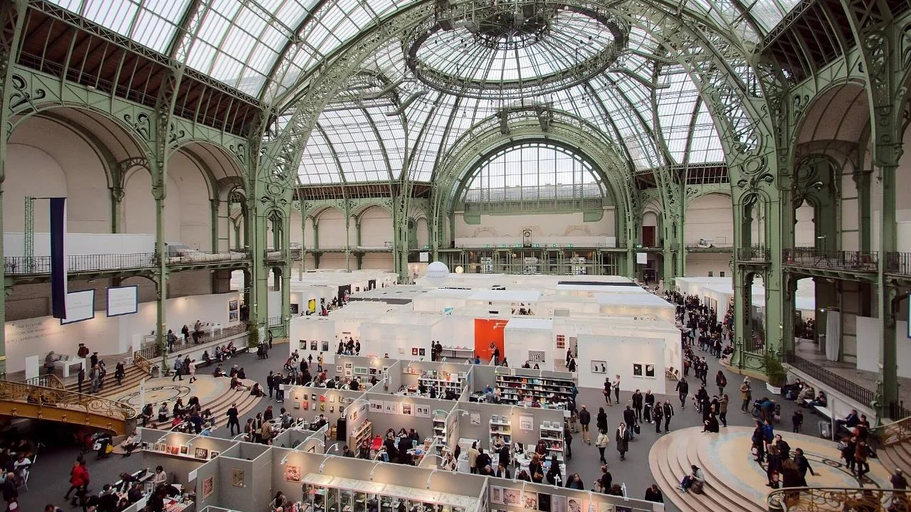

Keisha Scarville’s Passports named PhotoBook of the Year at Paris Photo
Moeko Ishiguro wins the $10,000 First PhotoBook prize as the Paris Photo–Aperture awards draw a record number of entries from 56 countries.

The winners of the 2026 Paris Photo–Aperture PhotoBook Awards were announced on 13 November at Paris Photo in the Grand Palais. PhotoBook of the Year went to Keisha Scarville for Passports, 2012–2025, published by MACK in London.
According to the organisers, Scarville’s book reflects on the love between a father and a daughter and on the uneasy relationship between homeland and diaspora. Juror Justine Kurland said it explores how images hold histories and how photography can imagine a world worth living in.
The First PhotoBook prize of $10,000 went to Moeko Ishiguro for Notation(s), which she published herself in Tokyo. Photography Catalog of the Year went to L Is for Look: Children’s Photobooks, edited by Anne Lacoste and Rose Durr for Spector Books. The jury gave a special mention to Sara Bennett’s Looking Inside: Women with Life Sentences, a book of portraits published by Kehrer Verlag.
This year’s awards received a record number of books from 56 countries. The final jury was Justine Kurland, Pablo Larios, Chiara Bardelli Nonino, Lou Stoppard and Ferdinando Verderi. All 35 shortlisted books are on show at Paris Photo until 15 November and travel to PhotoIreland in Dublin in December.
Summary of the Aperture press release and Paris Photo. Written in our own words. The photograph above is an illustration, not from the winning books.